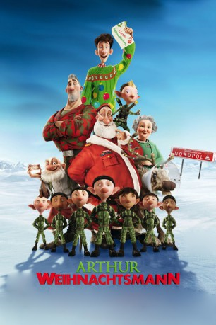

#4596 Arthur Weihnachtsmann
Alternativ: Arthur Christmas
 
 IMDB-Wertung: 7.1 / 10
IMDB-Wertung: 7.1 / 10  Metascore: 0
Metascore: 0 
Arthur, der gutmütige, aber tollpatschige jüngere Sohn von Santa, L-I-E-B-T alles, was mit Weihnachten zu tun hat. Genauer gesagt, ist er der Einzige in seiner Familie, auf den der Zauber von Weihnachten noch immer seine volle Wirkung entfaltet. Sein älterer Bruder Steve hingegen, der eines Tages die Zügel in die Hand nehmen soll, ist ein mit kühlem Verstand kalkulierender, cleverer Geschäftsmann, der effizientes Hightech und militärische Präzision am Nordpol eingeführt hat.
Jahr: 2011
Dauer: 97 Minuten
FSK: 0
Land: England Studio: Sony Pictures ReleasingTonspuren: DTS - ,
Untertitel: Deutsch,
Auflösung: 1080p (1920x1040) Größe: 5601 MB
Genre: Animation/Trick, Abenteuer, Komödie, Familie, Fantasy, Weihnachten
Regisseur: Sarah Smith,  Barry Cook
Barry Cook
Drehbuch: Benny Chan
Soundtrack:
Darsteller:
Datei: X:\Kinder Filme (A-F)\Arthur Weihnachtsmann (2011, FSK0, 1920x1040).mkv seit 20.10.2016
Festplatte: Kinder-Filme+Trick
 Es gibt insgesamt 68 Filme in der Gruppe 'Kinder Filme (A-F)'
Es gibt insgesamt 68 Filme in der Gruppe 'Kinder Filme (A-F)'